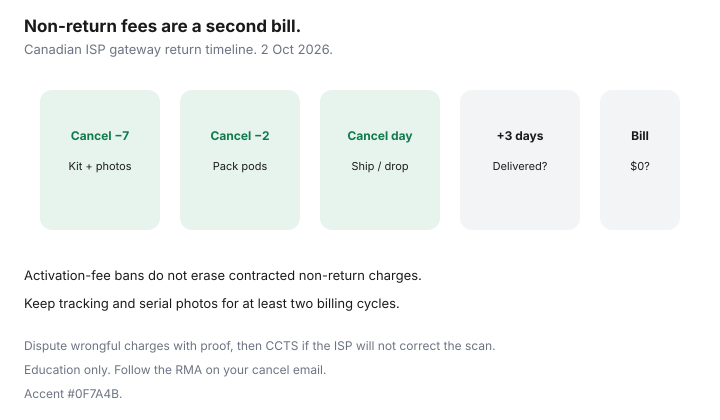

Internet · Canada
Returning ISP Modems and Gateways in Canada: Avoid Non-Return Charges
Ex-customers discover modem and gateway non-return charges months later — often larger than the early cancellation fee they argued about. After CRTC 2026-43, activation-style fees are mostly banned, but contracted equipment non-return charges remain allowed when you keep the ISP’s hardware. This checklist is how Canadian households close the loop. Education only; stamped ~22 Sep 2026.
Disclosure: Education only. Compatible modems and mesh systems are offer types if you move to BYOM on an independent — verify approved lists. No ISP partnership. CCTS will not treat a missing gateway as a banned activation fee.
Key takeaways
- Non-return is a separate column from ETF and from banned activation fees.
- Know the deadline, ship label, or drop-off options before cancel day.
- Photograph serials and keep tracking numbers until the bill clears.
- Fee amounts vary by brand and gear — dispute with proof, then CCTS if needed.
- On BYOM transitions, avoid double rental while two modems are active.
What counts as returned vs “unreturned” on final bills
Returned means the ISP’s warehouse or store intake scanned your serials against the account. A box left with a neighbour, a gateway in a moving tote, or pods still in the den all count as unreturned until the scan happens. Wi-Fi extenders and power supplies on the original kit usually travel with the modem — missing bricks can still trigger fees.
Deadlines, shipping labels, and drop-off options
- Ask for return instructions in the cancel confirmation email.
- Prefer official prepaid labels or listed drop-off partners over a random courier.
- Note whether pods and remotes need separate RMA barcodes.
- If a technician retrieves gear, get a signed list of serials before they leave.

Photograph serials and keep tracking numbers
- Photo of each serial sticker (modem, pods, STB if any).
- Photo of the packed box on the scale or at the counter.
- Tracking PDF or drop-off receipt with date.
- Hold files 90+ days — some non-return invoices lag.
Common fee amounts and how to dispute them
Public anecdotes and contracts in 2026 still show gateway non-return in the hundreds of dollars depending on brand and whether multiple pods are missing. Treat any blog’s “$200 flat” as a sketch. On dispute day:
- Send tracking showing delivered-before-deadline.
- Match serial photos to the account equipment list.
- Ask for the scan log date in writing.
- If the charge violates the contract timing or the gear was scanned, escalate inside the ISP, then CCTS.
BYOM transitions without double rental
When moving to an independent that allows an approved modem, schedule activation so the old ISP rental stops when the new modem lights — not two weeks of overlapping rentals plus a rush return. Fibre ONTs stay with the incumbent; you are returning the Wi-Fi hub, not replacing glass with a cable stick. See buy vs rent.
Return checklist timed to your cancel date
| When | Action |
|---|---|
| Cancel − 7 days | Request return kit / drop-off list; photo serials |
| Cancel − 2 days | Pack all power supplies and pods; label box |
| Cancel day | Ship or drop off; save receipt |
| Cancel + 3 days | Confirm tracking delivered |
| Next invoice | Check rental $0 and no non-return line |
| If charged | Dispute with proof; CCTS if unresolved |
Sources & date stamps
- CCTS fee page references (posted 2 Sep 2026; re-read ~22 Sep 2026) — equipment non-return can remain billable.
- CRTC 2026-43 — activation-fee ban does not erase non-return charges.
- Saving Optimizer: Internet ETFs; mesh vs pods; move without paying twice; buy vs rent modem.
Frequently asked questions
Is a modem non-return fee an illegal activation fee?
No. CCTS and CRTC 2026-43 framing treat contracted equipment non-return as a different, still-allowed category when you keep the hardware.
What if Canada Post says delivered but the ISP charges me?
Send the delivery scan, serial photos, and ask for their intake log. Escalate inside the ISP, then CCTS with the same pack.
Do I return mesh pods I bought myself?
No — only ISP-owned rental gear. Keep purchase receipts so a billing agent cannot claim your nodes are theirs.
Can I drop gear at a Bell or Rogers store?
Only if your return instructions say so. Unauthorized store drops without a receipt are how serials go missing. Follow the RMA path on your cancel email.
How long should I keep the tracking number?
At least until two billing cycles show no non-return charge. Ninety days is a prudent household default.